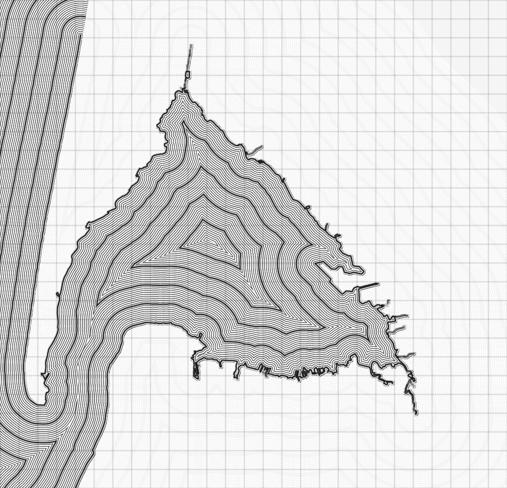
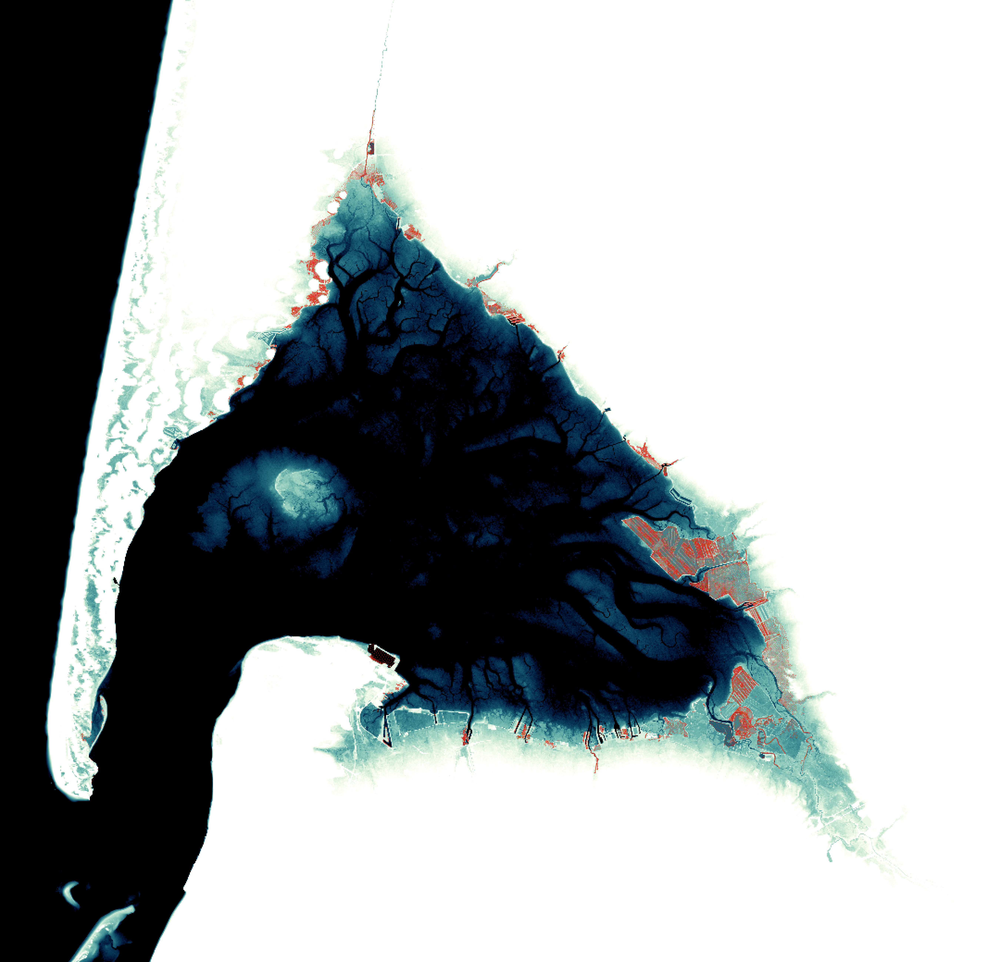
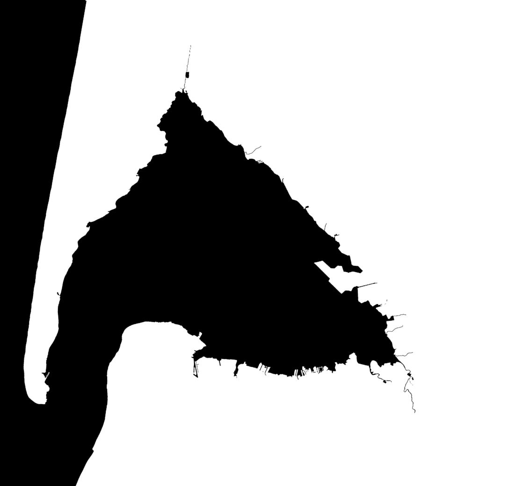

"dist1.tif" (1080×1040 pixels) ↑↑↑

"dist1.png" (1080×1040 pixels) ↑↑↑
Lets start with this little video (polar3.mp4) ↓↓↓
The file "fond1.pgw" is linked to the image "fond1.png" :
|
 "fond1.png" (5400×5200 pixels) ↑↑↑ |
 "mask1.png" (1080×1040 pixels) ↑↑↑ |
The images "dist1.tif" and "dist1.png" have been returned by the GNU Octave script
"dist1.m" with the coastal data from the file
"bord0.txt" (in Lambert 93) :
|
"dist1.tif" (1080×1040 pixels) ↑↑↑ |
 "dist1.png" (1080×1040 pixels) ↑↑↑ |
To be continued...